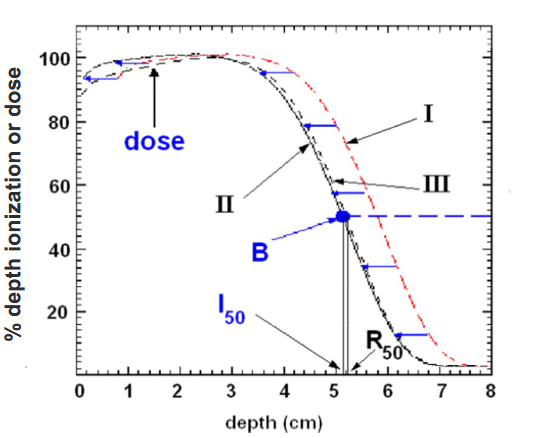
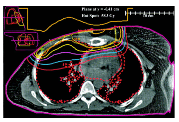

Prescrição, Registro e Relato em Terapia com Feixe de Elétrons
Por que o ICRU 71 é essencial
O ICRU Report 71 (2004) padroniza conceitos e métodos para prescrição, registro e relato de tratamentos com feixes de elétrons. Essa uniformização garante comunicação segura e comparável entre centros de radioterapia em todo o mundo.
Facilita comparações internacionais e ensaios clínicos multicêntricos.
Reduz erros ao definir volumes, doses e parâmetros de forma inequívoca.
Permite avaliar desfechos clínicos entre diferentes instituições.
Elétrons representam cerca de 10–15% de todos os tratamentos, ideais para lesões superficiais devido à rápida queda de dose em profundidade.
ICRU 71 – Fundamentos Biológicos
ICRU 71:
"Para elétrons na faixa de 5–35 MeV, nenhuma diferença significativa de RBE foi observada
em comparação com fótons de alta energia."
Prescreva a mesma dose utilizada com fótons!
Para feixes acima de 40 MeV, alguns estudos relatam RBE entre 1.06–1.17. Entretanto, essas energias não são utilizadas na prática clínica.
Definições essenciais para prescrição e planejamento
Volume do tumor visível ou palpável clinicamente, identificado por imagem ou exame físico.
Inclui o GTV e áreas com possibilidade de doença microscópica. Define o volume biológico do tratamento e deve ser delineado considerando margens anatômicas.
Adiciona margens ao CTV para compensar incertezas de movimento, set-up e variação de feixe. Garante que a dose prescrita cubra o alvo em todas as condições de tratamento.
OAR: estruturas normais sensíveis à radiação. PRV: OAR acrescido de uma margem de segurança para compensar variações de posicionamento.
O DVH (Dose Volume Histogram) resume graficamente a distribuição de dose em volumes definidos. Curvas ideais mostram queda abrupta após o volume prescrito, indicando homogeneidade. Caudas longas ou subidas suaves sugerem heterogeneidade ou subdosagem.
| Parâmetro | Elétrons | Fótons |
|---|---|---|
| Distribuição de dose | Rápida queda após o PTV | Penetração profunda |
| Indicação principal | Lesões superficiais | Tumores profundos |
| Energia típica | 6–20 MeV | 4–18 MV |
Critérios para escolha adequada do feixe e determinação da dose
A prescrição deve assegurar que a dose prescrita cubra o PTV de forma homogênea, com a isodose de referência passando pela borda distal do volume-alvo. Para feixes de elétrons, a energia deve ser escolhida de modo que a profundidade correspondente a R90 coincida com a borda distal do PTV.
| Profundidade (cm) | Energia Recomendada (MeV) | Aplicação Clínica |
|---|---|---|
| 0–1.5 | 6 MeV | Lesões cutâneas e cicatrizes superficiais |
| 1.5–3 | 9 MeV | Linfonodos superficiais ou áreas pós-cirúrgicas |
| 3–4 | 12 MeV | Parede torácica rasa |
| 4–6 | 15–18 MeV | Parede torácica moderada |
| 6–8 | 20–25 MeV | Tumores profundos ou campos de sobreposição |
Regra prática: utilize a menor energia que ainda garanta cobertura adequada do PTV. Evite energias excessivas para minimizar dose em tecidos profundos.
Propriedades dosimétricas fundamentais
Os principais indicadores da qualidade física de um feixe de elétrons são o gradiente de dose e a contaminação por raios-X:
Diferente dos fótons, os elétrons são muito sensíveis a heterogeneidades (osso, pulmão, ar). Correções algorítmicas são essenciais para cálculos de dose precisos, especialmente em parede torácica e regiões com cavidades.
| Energia (MeV) | Rp (cm) | R85 (cm) | Profundidade Típica | Indicação |
|---|---|---|---|---|
| 6 | ~3 | ~2 | Superficial | Pele, parede torácica rasa |
| 9 | ~4.5 | ~3 | Superficial-moderada | Linfonodos cervicais, parótida |
| 12 | ~6 | ~4 | Moderada | Parede torácica, cadeia mamária interna |
| 15–20 | ~8–10 | ~6–7 | Moderada-profunda | Tumores profundos, boost |
| ≥25 | ≥12 | ≥8 | Profunda | Uso raro, poucos centros |
As Curvas de Porcentagem de Dose em Profundidade (PDD) mostram como a energia afeta a penetração no tecido. Energias maiores aumentam o dmax e R50, mas elevam a dose de superfície.

ICRU 71, Seção 5.2.6:
"A bolus (usually tissue-equivalent material) is placed directly into contact with the irradiated tissues
in order to provide build-up, attenuation, or sometimes additional scattering of the electron beam."
Principalmente para baixas energias (6–9 MeV)
Superfícies curvas ou irregulares
Bolus modulado ou em cunha
A dose de pico absorvida em água deve sempre ser reportada, pois está diretamente relacionada ao número de unidades de monitor e mantém comparabilidade entre tratamentos.
O bolus atua como “pele artificial”, melhorando a homogeneidade da dose e aumentando a cobertura do volume alvo, ao custo de redução do alcance terapêutico.

ICRU 71, Seção 5.2.4:
"When an electron beam is incident obliquely with respect to the surface,
the central-axis depth dose will change [...] resulting in increased surface dose,
decreased penetration, and asymmetric distributions."
Elétrons são altamente sensíveis à obliquidade. O espalhamento diferencial cria distribuições assimétricas, superficiais e de menor penetração.
Aumenta significativamente
Principalmente no lado proximal
Desloca-se para regiões mais superficiais
Pico off-axis
Diminui
R₉₀ e R₈₅ reduzidos
| Ângulo (°) | dmax (cm) | Dose Pico (%) | R₉₀ (cm) | Observação |
|---|---|---|---|---|
| 0° | 2.3 | 100% | 3.0 | Referência |
| 15° | 1.9 | 100% | 2.7 | Pico +0.4 cm superficial |
| 30° | 1.4 | 101% | 2.4 | Dose ↑, penetração ↓ |
| 45° | 0.9 | 102% | 1.8 | Distribuição assimétrica |
* Profundidades medidas perpendicularmente à superfície
ANÁLISE: PTV: 0.5–3.0 cm (⊥) θ = 35° → profundidade eixo = 3.0 / cos(35°) = 3.66 cm R₉₀ (12 MeV) = 4.0 cm → adequado → Dose superficial ↑↑ e distribuição assimétrica → Decisão: 15 MeV + bolus compensador
Sensibilidade Crítica em Feixes de Elétrons
Elétrons perdem energia por colisões inelásticas com elétrons do meio, tornando-se altamente dependentes da densidade eletrônica. Assim, variações de densidade afetam drasticamente a dose depositada.
"Quando heterogeneidades grandes estão presentes e apenas avaliação Nível 1 é possível, o uso de feixes de elétrons deve ser reconsiderado."
Fluxo completo de planejamento e documentação
Responsabilidade do oncologista radioterápico e equipe multidisciplinar.
Documentação padronizada realizada pelos departamentos clínico, físico e técnico.
É MANDATÓRIO harmonizar o relato para troca segura de informações entre centros. O relato deve seguir padrões definidos:
Abordagem 1 - Ponto de Referência Central:
Dose prescrita no ponto de referência (ICRU), com variação permitida de ±10% (elétrons).
Abordagem 2 - Intervalo de Dose no PTV:
Todos os pontos no PTV devem estar dentro dos limites especificados.
Abordagem 3 - Dose Mínima ao PTV:
Menos recomendada, pode mascarar heterogeneidades e prejudicar comparações.
Adaptados aos recursos e complexidade do tratamento
Representa os requisitos mínimos para realizar tratamento com elétrons de forma segura e eficaz.
⚠️ Aplicável a centros com recursos limitados ou tratamentos paliativos.
Permite intercâmbio completo de informações entre centros com infraestrutura moderna.
✓ Padrão recomendado para centros modernos com expertise adequada.
Engloba técnicas complexas e inovadoras, requerendo alto nível de expertise clínica e física.
⚡ Requer expertise médica/física avançada e equipamentos de alta complexidade.
| Nível | Complexidade | Correção de Heterogeneidade | Tipo de Relato |
|---|---|---|---|
| 1 | Básico | Não aplicada | Dose estimada (pico e ponto ICRU) |
| 2 | Intermediário | Sim, algoritmo 3D | Relato completo com DVH |
| 3 | Avançado | Correções completas | Relato detalhado, incluindo QA |
ICRU 71, Seção 4.3.2, p.52:
"The reference point for reporting shall fulfill four criteria:
(i) it shall be in a region of homogeneous dose, (ii) it shall be
clinically relevant, (iii) it shall be easily defined and located
reproducibly in different scans, and (iv) the absorbed dose at the
reference point shall be determined with high accuracy."
O Ponto ICRU deve estar em uma região onde o gradiente de dose é pequeno.
A dose no Ponto deve representar fielmente a dose entregue ao alvo clínico.
Deve ser possível localizar o ponto de forma clara e reprodutível por qualquer profissional.
Teste prático:
Outro físico consegue localizar o mesmo ponto em CT futuro? Se sim, está bem definido.
Deve ser possível medir ou calcular a dose com precisão ≥ 3%.
Caso: Parede torácica
Ponto ICRU: Centro geométrico do PTV, profundidade 2.2 cm ao longo eixo clínico, 1 cm lateral à cicatriz.
Caso: Parede torácica
Ponto ICRU: “Ponto de máxima dose no PTV”
ICRU 71, Seção 4.3.3.3, p.53–54:
"In reporting the dose distribution in and around the target, it is important to report how many of the voxels in the PTV receive dose values between 95% and 105% of the prescribed dose."
Definição: Percentual do PTV recebendo ≥ 95% da dose prescrita.
PTV 95 = (Volume com dose ≥ 95%) / (Volume total PTV) × 100%
Meta ICRU 71: PTV 95 ≥ 95%
No mínimo 95% do PTV deve receber 95% da dose!
Definições:
Uso:
Metas recomendadas:
ICRU 71: análise de 107 pacientes tratados com elétrons.
| Métrica | Valor | Interpretação |
|---|---|---|
| PTV com 100% dose | 29 pacientes (27%) | Ideal (mas raro) |
| PTV com 95–100% dose | 76 pacientes (71%) | Aceitável |
| PTV com 5–10% vol < 95% | 14 pacientes | Ligeiramente heterogêneo |
| PTV com >10% vol < 95% | 8 pacientes | Muito heterogêneo |
✓ Excelente: plano conforme especificações ICRU, cobertura uniforme e segura.
⚠️ Aceitável com cautela: 5–10% do PTV abaixo de 95%; documentar e justificar.
✗ Inadequado: subdose em até 15% do PTV. Reconsiderar o plano.
✗ Inaceitável: replanejamento obrigatório.
Dose prescrita: 50 Gy / 25 frações
Conclusão: Plano aprovado conforme ICRU 71
Plano aprovado sem restrições.
Aprovado, mas revisar homogeneidade e Dmáx < 107%.
Requer revisão e justificativa formal.
Plano inaceitável — replanejar completamente.
Técnicas Híbridas
ICRU 71, Seção 5.3, p.64:
"A combination of electron and photon beams may be used to achieve better dose distributions.
The combination may be in sequential fractions or by weighting different contributions of each beam type."
Fóton de baixa energia: trata regiões profundas e médias
Elétron: reforço superficial e contornos especiais
Resultado: Distribuição de dose superior à de feixes isolados.
Como funciona: cada fração recebe ambos os feixes no mesmo dia.
Vantagens:
Desvantagens:
Como funciona: primeiro utiliza-se fóton por várias frações e depois elétron como boost.
Vantagens:
Desvantagens:
Erro: calcular apenas DVH de um feixe.
Correção: sempre somar DVH fóton + elétron (voxel a voxel).
Erro: reportar apenas fóton.
Correção: somar doses dos dois feixes antes de relatar.
Erro: campos mal alinhados (diferente isocenter).
Correção: usar mesmo ponto de referência e verificação a laser.
Erro: prescrever “50 Gy E–F” mas aplicar 50 Gy de cada.
Correção: especificar claramente a soma total (ex: 25 + 25 Gy = 50 Gy).
Protocolo Especializado
ICRU 71, Seção 6.1, p.69:
“Intra-operative electron therapy é a administração de uma dose relativamente alta em fração única para uma área anatômica bem definida, exposta cirurgicamente. O feixe de elétrons é aplicado através de um aplicador especial montado no acelerador linear.”
Dois tipos principais:
Energias típicas: 6 – 22 MeV
| Energia Nominal | Energia na Superfície | Profundidade Típica | Indicação IORT |
|---|---|---|---|
| 6 MeV | 4–5 MeV | 1–2 cm | Parede superficial |
| 9–12 MeV | 7–10 MeV | 2–4 cm | Leito cólon, parede torácica |
| 15–18 MeV | 12–15 MeV | 4–6 cm | Pâncreas, intestino |
⚠️ Nota: Perdas de energia no aplicador (3–5 MeV) devem ser consideradas!
Definição: Ângulo entre eixo do feixe e superfície do aplicador.
Feixe perpendicular → clinical axis = eixo do feixe
Feixe 45° → clinical axis ⟂ superfície
Profundidade real: d' = d × cos(θ)
Técnicas de Elétrons para Corpo Inteiro
A Irradiação Total de Pele (TSI) utiliza feixes de elétrons de energia baixa a moderada para tratar toda a superfície cutânea, com o objetivo de erradicar doenças como o Mycosis fungoides e outros linfomas cutâneos.
Desenvolvida na Universidade de Stanford, é o padrão-ouro para TSI. Utiliza feixes de elétrons de baixa energia em grandes distâncias-fonte (SSD ≈ 350–400 cm) para cobertura homogênea.
Variante moderna na qual o paciente gira lentamente diante do feixe de elétrons, permitindo distribuição contínua e homogênea.
Garantia de qualidade para IORT e TSI conforme ICRU 71
O programa de Controle de Qualidade (QA) assegura que todos os parâmetros de dose, geometria e segurança estejam dentro dos limites estabelecidos pelos relatórios ICRU 71 e AAPM TG-40/51/71. Cada etapa — desde o planejamento até a entrega — deve ser testada, documentada e reavaliada periodicamente.
| Parâmetro | Tolerância | Frequência | Método |
|---|---|---|---|
| Dose rate | ±3% | Semanal | Câmara de referência |
| Energia média (R50) | ±5% | Mensal | Curva PDD em água |
| Simetria | ±2% | Semanal | Detector 2D / filme |
| Planicidade | ±3% | Semanal | Perfil transversal |
| Profundidade máxima | ±2 mm | Mensal | Scanner de água |
| Calibração TPS | ±3% / ±3 mm | Semestral | Casos teste clínicos |
| Dosimetria in vivo | ±5% | Por paciente | TLD / MOSFET |
Fontes oficiais e literatura fundamental
Prescribing, Recording, and Reporting Electron Beam Therapy.
Base fundamental para todas as práticas de radioterapia com elétrons, incluindo IORT e TSI.
Definição dos volumes GTV, CTV, PTV e recomendações de dose.
Aplicáveis a elétrons e fótons, referência obrigatória para prescrição clínica.
Radiation Dosimetry: Electron Beams with Energies 1–50 MeV.
Contém dados físicos detalhados para calibração e QA de feixes eletrônicos.
Clinical Electron Beam Dosimetry – guia prático para calibração e medição clínica.
Reference Dosimetry Protocol – calibração de feixes de elétrons e fótons de alta energia.
Total Skin Irradiation – técnicas, QA e parâmetros clínicos para TSI.
QA of Medical Accelerators – auditorias e verificações de rotina de aceleradores clínicos.
Intraoperative Electron Beam Therapy – recomendações técnicas específicas para IORT.
Quality Assurance for Treatment Planning – validação e controle de qualidade de TPS.
Absorbed Dose Determination in Photon and Electron Beams.
Protocolo internacional de dosimetria, base para comparações entre países.
The Use of Plane Parallel Ionization Chambers in High Energy Electron Beams.
Referência para calibração de câmaras plano-paralelas.
Procedures in External Radiation Therapy with Electron and Photon Beams.
Normas da associação nórdica de física clínica — precursoras do TG-25.
The Physics of Radiation Therapy – Lippincott Williams & Wilkins.
Obra clássica, capítulos dedicados à física e dosimetria de elétrons.
Radiation Oncology: Biophysical Principles and Clinical Applications.
Integração entre princípios biológicos e aplicações clínicas.
Treatment Planning and Dose Calculation for Electron Beams –
Seminars in Radiation Oncology.
Discussão detalhada de planejamento 3D e correções de heterogeneidade.
O ICRU Report 71 define padrões essenciais para prescrição e relato de tratamentos com elétrons, complementados pelos protocolos AAPM e IAEA. Aplicar essas diretrizes assegura segurança, reprodutibilidade e qualidade clínica.
“Qualidade em radioterapia começa com precisão em medição e exatidão em relato.”